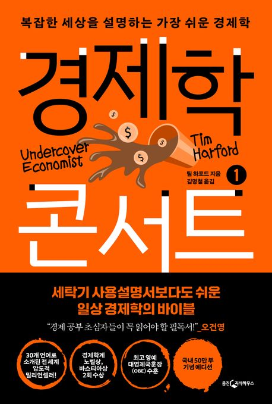
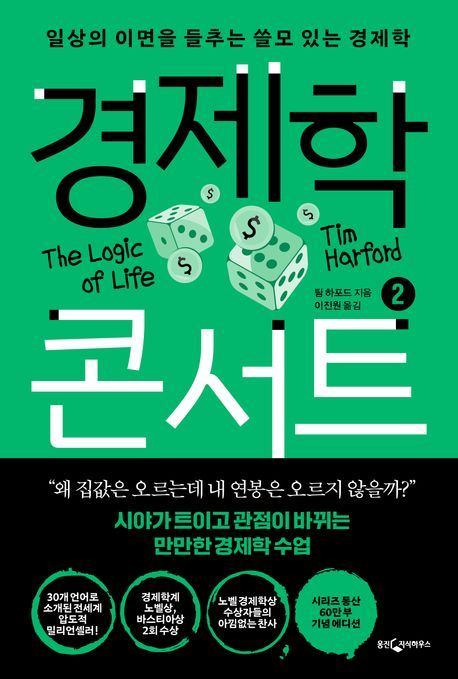
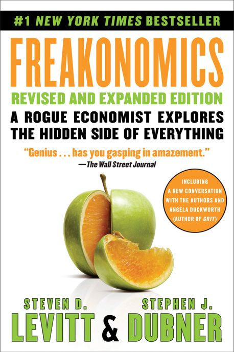
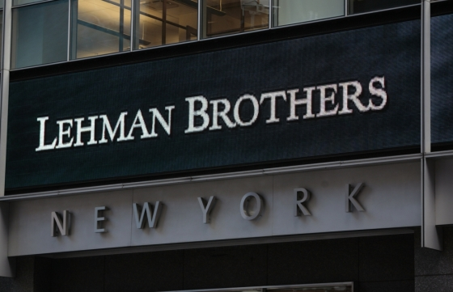
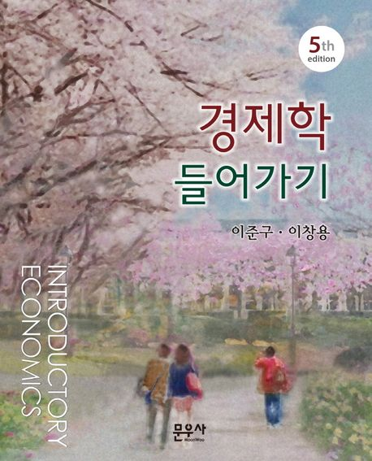
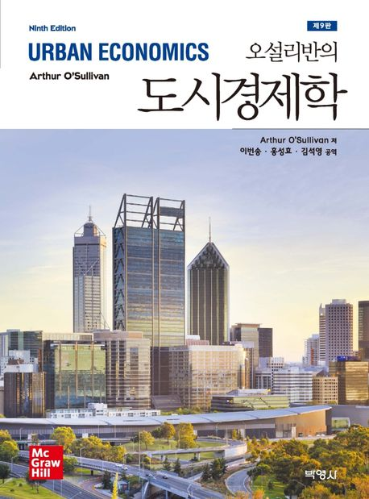
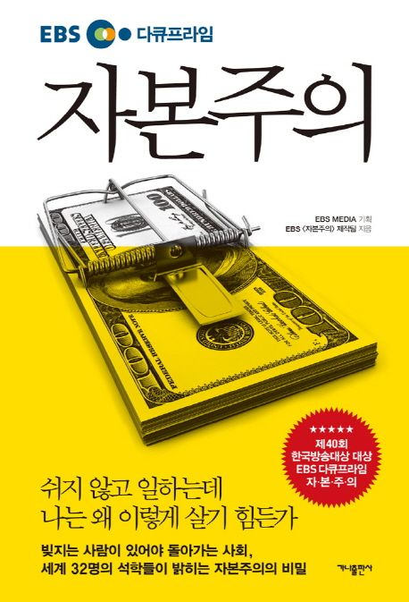

1강. 도시경제학 강의 소개
경제(학)적 사고가 필요한 이유
미국 금리인하와 엔비디아의 미래
엔비디아와 삼성전자
삼성전자의 미래와 용인의 성장
경제(학)적 사고가 필요한 이유
전동 킥보드의 보급과 대중교통과의 관계
강남 부동산은 불패인가?
왜 청년들은 아이를 낳지 않을까?
경제학의 정의
인간의 물질적 욕구를 충족시키기 위해
희소한 자원을 어떻게 써야할 것인가를 연구하는 학문
선택(choice)의 문제를 연구하는 학문
경제학의 기본가정
(수단의) 합리성(rationality)
: 목표가 주어졌을 때 그 목표를 가장 효율적으로 달성하는 방법을 선택
합리적 선택의 예: 대학진학 여부
합리적 경제인이라면 대학 진학의 편익과 비용을 고려하여 선택
- 편익(benefit): 대학 졸업 후 소득, 대학 졸업에 따른 사회적 이익
- 비용(cost): 대학등록금, 생활비 등
기회비용의 중요성
합리적 경제인이라면 대학 진학의 편익과 비용을 고려하여 선택
- 편익(benefit): 대학 졸업 후 소득, 대학 졸업에 따른 사회적 이익
- 비용(cost): 대학등록금, 생활비 + 대학을 진학하지 않고 바로 사회에 진출할 시 얻을 소득
→ 기회비용(opportunity cost)
: 어떤 선택을 통해 포기하는 행위의 최대 가치
매몰비용(sunk cost)
대학생활 2년 후 스타트업을 할 기회가 생겼다면 이 때 당신의 선택은?
- 편익(benefit): 대학 졸업 후 소득, 대학 졸업에 따른 사회적 이익
→ 매몰비용(sunk cost): 지출한 뒤에는 회수할 수 없는 비용 (예. 본전을 뽑아야 한다!)
- 비용(cost): 지난 2년 간 지출한 대학등록금 및 생활비, 앞으로의 등록금 및 생활비,
대학을 포기하고 스타트업을 통해 얻을 소득
비용(cost)의 다양성
(accounting cost)
회계장부 상에 기재된 비용 (예. 인건비, 원자재 구입비, 임대료 등)
(opportunity cost)
실제 지출하는지 여부와 상관없이 어떤 선택에 따라 포기해야 하는 행위의 최대 가치
(sunk cost)
지출된 뒤에 어떤 선택을 하든 회수할 수 없는 성격의 비용
경제학 = 인생, 우주, 그리고 모든 것을 다루는 학문?



경제학 = 인생, 우주, 그리고 모든 것을 다루는 학문?
2008년 금융위기도 예측 못하는 경제학자 = 본업은 소홀한 경제학자

출처: “리먼 사태는 먼지 없는 부패”… 끝까지 반성 않는 大盜 – 머니투데이 (mt.co.kr)
미시경제학과 거시경제학
(micro economics)
개별 경제주체의 선택과 개별 시장의 움직임에 초점
(macro economics)
경제 전반적인 움직임에 초점
경제학과 도시경제학
(micro economics)
개별 경제주체의 선택과 개별 시장의 움직임에 초점
→ 도시경제학: 도시 내 개별주체의 선택 및 개별 시장 변화(입지, 주택시장, 공간활용 등)
(macro economics)
경제 전반적인 움직임에 초점
→ 도시경제학: 도시 및 지역의 경제 전반적인 움직임(총생산량 변화, 고용변화, 생산성 등)
경제학적 사고의 기초
- 선택은 경제활동의 핵심이다.
- 이 세상에 공짜는 없다.
- (자발적인) 교환은 모두에게 이득이 된다.
- 수요와 공급의 힘을 거스르기는 힘들다.
- 마지막 하나가 어떤 영향을 미치는지 보아야 한다.
- 사람들은 유인에 민감한 반응을 보인다.
- 시장은 효율적이지만 완벽하지 않다.
- 정부가 유용한 역할을 할 수 있지만 문제를 더 악화시키기도 한다.
- 한꺼번에 효율성과 공평성의 두 마리 토끼를 쫓기는 어렵다.
- 물가안정과 고용안정을 동시에 달성하기는 매우 어렵다.
학습 목표
경제학의 시각으로 도시를 이해하기 위하여
경제학 기초개념과 응용이론을 학습하는 것
강의 교재
- 이준구, 이창용, 2022, 경제학 들어가기(제5판), 법문사.
- 오설리반(이번송, 홍성효, 김석영 역), 2022, 오설리반의 도시경제학(제9판), 박영사.


주별 강의 내용
강의 대체

EBS 다큐프라임 – 자본주의 5부작
https://www.youtube.com/playlist?list=
PL066-ALa462CuaWCdQR7k4KNMJB-54HPC
기말고사 문제 출제 예정
평가 방법
Q & A
권규상 Kyusang Kwon
(kyusang.kwon@chungbuk.ac.kr)